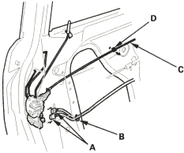
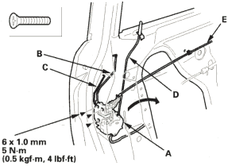

Except KE model:

- Remove the screws, then remove the latch (A) through the hole in the door. Take care not to bend the outer handle rod (B), cylinder rod (C), lock rod (D) and inner handle cable (E).
Fastener Locations
 : Screw, 3
: Screw, 3

- Install the latch in the reverse order of removal and note these items:
- Make sure the actuator connector(s) is/are plugged in properly, and each rod is connected securely.
- Make sure the door locks and opens properly.